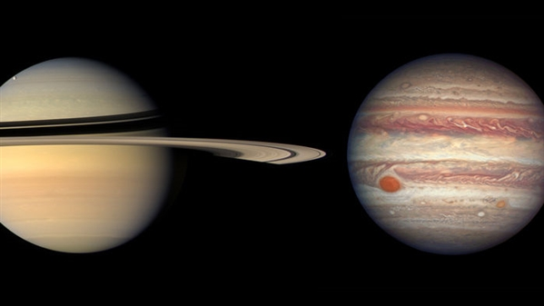
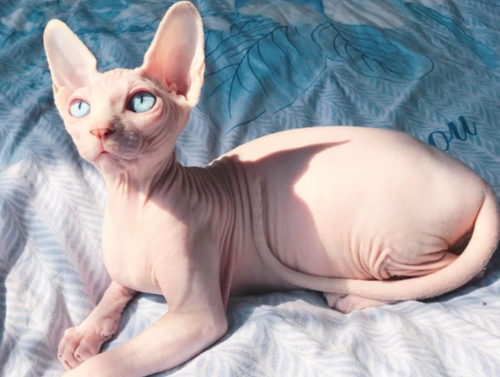
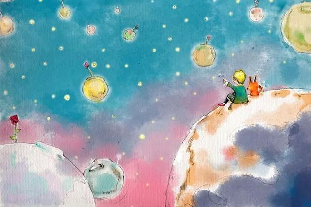

我在木星土星上行走

我在木星土星上行走
前几天吧，又做梦了，关于宇宙、星球…我已记不清这是第几次梦见哪个我无法企及的迷人黑色，像是一种冥冥之中的指引，好像另一个世界的我在向我展示些什么。
一家、两家、三家，对，就是这么多人，突然我熟悉的爸爸妈妈外公外婆阿姨舅舅突然才上了一片陌生的土地，充满褶皱的，像斯芬克斯猫的颈纹，是淡黄，还是棕褐，看不清，因为只有微弱的光线，微弱的光线是穿过树木的，宛如碎汞，我脚下是木星，我知道现实生活中，不会有数目存在在木星之上，但这是梦境，谁能在意真实呢？阿姨说这像一个个小沙丘，我说不像，因为一粒沙子也见不着，就是像光滑的皮肤。扭头，不像地球🌏上的广阔无垠，左侧是另一颗巨大的星球，好像把左侧地去路全部堵死了一样，太奇妙，这是一种触手可及的快乐。

可，怎么又会出现电梯呢？我们在木星上走着走着就看到了电梯，梦境中的我们很熟悉地按了目的地——土星，熟练到好像我们经常做这样的时空旅游。这部电梯只通向相邻的星球，等我们踏上土星，眼前只有光秃秃，放眼望去，倒可以看到地球，这个场景怎么说呢，非常像《小王子》中的，好像我们并没有到达土星，只是不小心踏上了B612，脚下的星球非常的小，都能看出它球星的轮廓。

只是时间不早了呀，大家要返程了。
这些梦境让我很快乐，我觉得这是我生命的延续，平行世界的我在替我体会着不可思议。
很长一段时间，这些梦境都可以算作是我的精神食粮，是我觉得这个世界还挺奇妙的催化剂，至少让我对这个宇宙还很好奇。
晚安！对了，我超爱《小王子》。